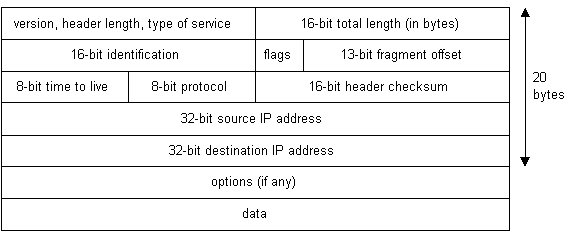
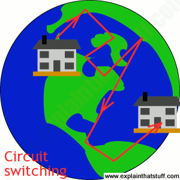
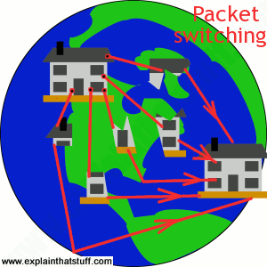

How It Works
What actually is the Internet?
To actually define what the Internet is is quite difficult, but I've gone to the effort of making this site, so I'll give it my best shot. If you were to simply type into Google "What is the Internet?", then it would tell you that it was:
"a global computer network providing a variety of information and communication facilities, consisting of interconnected networks using standardized communication protocols."
Now this is all true, the Internet isn't just some cloud up in the sky that can magically help you to communicate with your friends via Facebook, so let's break down Google's definition. It's certainly global, with tens of billions of devices now connected to it with millions more connecting every day, and as for the communication and information facilities, well just have a look at the info-graphic below:
If you want to talk, you'll need an address!
In order for one machine to contact the other via the Internet, they must have a unique address, much like if you wanted to send a letter to someone, you must first have their unique postal address. An Internet address for a machine comes in the form XXX.XXX.XXX.XXX where each XXX is a number from 0 to 255. This unique address is called the machines IP address, or Internet Prorocol address, which I'll talk about later on in this page.
Below is an image that describes very roughly how two computers with IP addresses 10.42.36.49 and 54.63.71.81 would communicate via the Internet, the structure of which I'll go into a bit more detail on later on.
The IP address examples I used just then are what's known as IPv4 (Internet Protocol Version 4) addresses, which means that mathematically speaking, there are 4,294,967,296 possible unique addresses by just using numbers 0-255. Now this hasn't been a problem until up to a few years ago, when the number of Internet users has grown dramatically, so there are more than 4,294,967,296 connected devices. To solve this, IPv6 was introduced, and a typical address looks something like 2002:4559:1FE2:4559:1FE2, where each section is written in hexadecimal. This means that there are 340 trillion, trillion, trillion possible combinations, or 340 followed by 36 zeros.
When you connect to the Internet through an Internet Service Provider (ISP) such as BT or Virgin, your machine is assigned a temporary IP address for however long you are online and connected for. If you connect via a Local Area Network (LAN) you might be assigned a permanent one. In any event, if you are connected to the Internet, you have a unique IP address.
Unlike the TCP protocol, which will be mentioned later, IP is very unreliable protocol. IP doesn't care whether or not a packet gets to it's destination. Nor does IP know about connections and port numbers. IP's job is simply to send and route packets to other computers. When IP packets arrive at their destination, they are often muddled up and sometimes some don't even arrive at all. The IP header looks like this:

So how do machines "talk the talk"?
So your shiny new computer is now connected to the Internet, and say the first thing you wanted to do was to send the word "sausages" to a weird friend of yours, how does that happen? The Internet uses a protocol called TCP/IP to transmit data across, or Transmission Contol Protocol/Internet Protocol.
TCP/IP is essentially the underlying communication language of the Internet. In base terms, TCP/IP allows one computer to talk to another computer via the Internet through the compiling of packets of data and sending them to the right IP address. For those who don’t know, much like the atom is the smallest unit of a cell, a packet is the smallest unit of transmitted information over the Internet, containing a maximum of 64K (65535 bytes). More on TCP later.
So first for the message to be sent, it must be translated from alphabetic text into electronic signals that can be send over a phone line or a fibre optic connection, then once it arrives, translated back into alphabetic text that's readable. This is done through the Operating System (OS) Protocol Stack. Now what that is is a set of network protocol layers that work together, two of which we've already met, TCP/IP. The two layers we haven't met are the Application layer, which is at the top of the stack, which are protocols specific to applications such as WWW, SMTP (Simple Mail Transfer Protocol), FTP (File Transfer Protocol), etc. Then there's the Hardware layer at the bottom which is the part that decodes your message from electronic signals into alphabetic text, so this could be your ethernet card.

The message, having been broken up into packets, is then sent through the TCP layer, which assigns what's called a port number to each packet of data. We need to know which program on the destination machine needs to receive the message because it will be listening on a specific port. Next is the IP layer, which gives each packet the IP address of the destination machine, so it knows where to go to. At the other end, the ISPs router examines the destination address in each packet and determines where to send it.
The language of the Net
This is also known as TCP/IP, and is the Internet's fundamental control system. In the computer world, a "protocol" is simply a standard way of doing things, a tried and trusted method that everybody follows to ensure things get done properly. So what do TCP and IP actually do?
TCP, or Transmission Control Protocol is responsible for routing application protocols to the correct application on the destination computer. When sending out data via TCP, it segments it into chunks and then adds a TCP header with specific TCP information to each chunk. TCP is reliable because for each packet received, an acknowledgement is sent to the sender to confirm the delivery. TCP also includes a checksum in it's header for error-checking the received data. The TCP header structure looks like this:

There is no IP address in the header as it's not the job of the TCP layer to move data from computer to computer, but from application to application, the job of the IP is from computer to computer.
HTTP and the World Wide Web
There is a common misconception that the Internet and the Web are the same thing, they are not. The Internet is basically machines using TCP/IP to talk to each other, the Web is one of the most popular services on the Internet which is made up from HTTP, or Hypertext Transfer Protocol.
HTTP is a connectionless text based protocol. Clients (or web browsers) send requests to web servers for web elements such as web pages and images. Once the request has been serviced by a server, the connection between the client and the server across the Internet is disconnected. A new connection must be made for each request.
When you type in an address into your URL bar, a whole load of magic happens as far as most people are concerned, but this is what really goes on:
- If you've typed in a domain name (e.g. www.google.co.uk) then a DNS (Domain Name Server) will be used to look up the corresponding IP address for the web server.
- The client connects to the specified web server and sends an HTTP request for the page asked for.
- If the page exists, the web server will send it back, if not, the dreaded 404 error message will be shown.
- The connection is then closed.
An HTTP request might look something like this:
GET /index.php HTTP/1.1
Host: www.myhostnamehooray.com
User-Agent: WoobaBrowser/3.4 (Windows)
The response to the above request may produce the following:
HTTP/1.1 200 OK
Date: Wed, 8 Aug 2001 18:08:08 GMT
Content-Type: text
Content-Length: 1234
<html>
<head>
<title>Welcome to my happy web site!</title>
</head>
<body>
<p>Welcome to our web site! </p>
</body>
</html>
How does data move around?
One method is called Circuit Switching. Back in the day when everyone was using their old phone line to connect to the Internet via dial-up (thank god for fibre...), things worked but they were a 'little' slow. When you ring someone on your home phone, the phone opens a direct connection (or circuit) between your home and theirs. So long as one of you doesn't hang up, the connection remains open. The reason why your dial-up connection is really slow is because circuit switching isn't a very efficient method of getting data from A to B. This is because if you're connected, then no one else can connect at the same time, as there is only one connection route, plus the route you're taking is a direct singular link to the server, and this could be across thousands of miles of cable, so it might take a while for data to get sent back and forth when only one connection is allowed at one time.
The other method is far superior, Packet Switching. Say you wanted to email your friend who lived on another continent, using circuit switching, you'd have to establish a very long singular connection to this continent, and so the whole process could take some time. With packet switching, the email you sent is broken up into lots of packets, and as each one has the IP address of yoour friend in the header, it will get there eventually, but each packet coul take a different route, then once they all arrive at the other end the email is then reassembled, so it's much more efficient.


Further information can be found at:
- The IP, TCP header tables and protocol stack graphics all came from a Stanford paper located here
- The circuit switching and packet switching graphics came from here
- The 'What Happens In an Internet Minute' graphic comes from here
- The two computers connected by a cloud graphic was from here
- The gorgeous timeline over on the History page is from here
- The simple slide-in menu is a slightly adapted version of the one found here
The following books helped me reach the level of detail covered in this page:
- TCP/IP Illustrated, Volume 1, The Protocols. W. Richard Stevens. Addison-Wesley, Reading, Massachusetts. 1994.
- Encyclopedia of Networking. Tom Sheldon. Osbourne McGraw-Hill, New York. 1998.